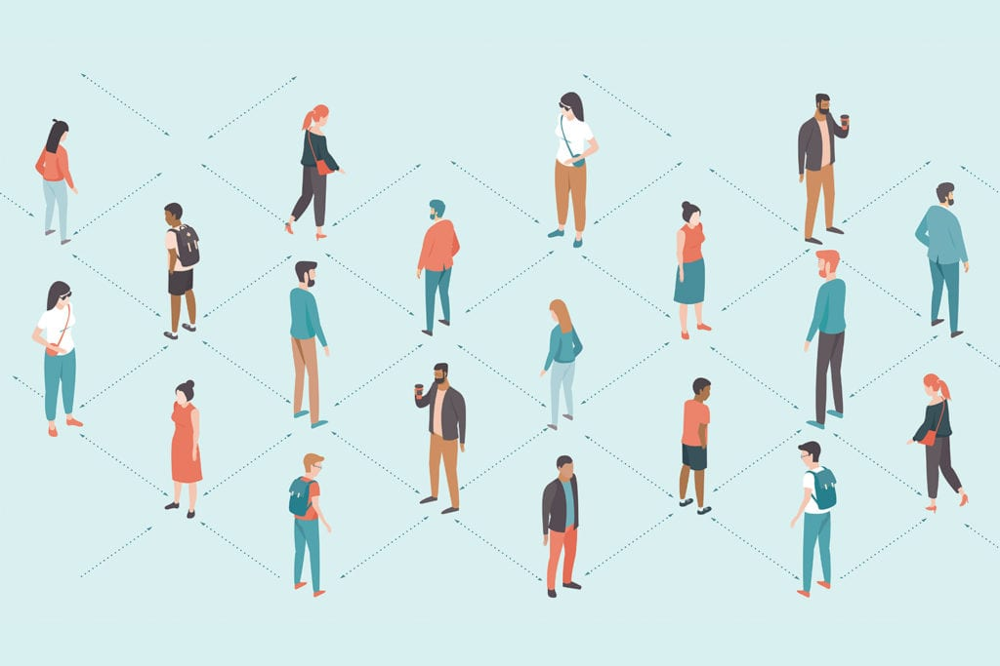

Political Implications
The global response to the ever-continuing Covid-19 pandemic demonstrated the different
priorities and
strategies for different countries. Throughout the world, measures were taken almost universally
to
reduce the transmission of the disease. Albeit, the nature and duration of precautions varied as
time
progressed. We saw some places like China, much of Europe, and New Zealand take measures that
maintained
extremely low rates and a quick recovery. However, some places, including the United States of
America,
have had a continued battle with trying to balance what the government can constitutionally
enforce in a
time of crisis and what the freedoms of its citizens are.
Social Implications
Focusing primarily on the social dynamic of the United States, there has been a clash
of social values.
The moral dilema stems from the national ideal that as free citizens, however
sometimes we must
sacrifice our liberities in the name of helping those around us. Additionally,
people in a fast-moving
consumerist society enjoy the ability to have a wide range of activities to enjoy
and a large network of
companions to interact with. The pandemic heavily altered our perception of what we
are able to do and
how we can do it. Currently, some people are still socially distancing themselves.
Meanwhile, others are
going back to living life in the same manner they did prior to the pandemic. How can
we balance
maintaining safety and enjoying our close comradeships?

Economic Implications
The global market cetainly took a hit throughout the duration of the
pandemic. Business had to radically shift and all companies saw either
great improvements or degradations in their operations. Those that
improved were typically companies with either large online delivery capabilities or were
strictly an
online
service. Almost all businesses had some sort of difficulty in facing the pandemic and
stabalizing
their
structure. Nevertheless, businesses that were most negatively impacted by the pandemic were
small
businesses
that could not realitstically adapt so suddenly and so drastically.
Conclusion
The bottom line is that the pandemic is not over and neither are the effects that it had on our
political,
social, and economic systems. I think as a whole, this event demonstrated to all parties that
stability and
normality can fluctuate at any point in time without warning. Our world is unpredictable; all we
can
do is
adapt to unforeseen circusmtances to the best of our abilities. Politically, there is still a
great
divide,
especially within the United States on what the government is allowed to enforce and how its
citizens should
act. Socially, we must find ways to balance safety and personal livelihood. Economically, both
individuals
and corporations still must work diligently to recover. Every day is a learning experience. If
we do
not
adequetly find solutions to our dilemmas in the moments in which we have them, there is always
tomorrow. But
we must be open to trying new things and working hard to find alternatives to remedy our
circumstances.